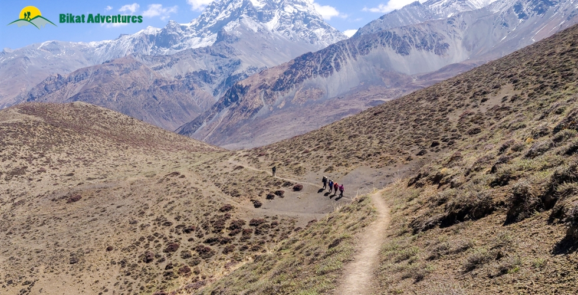
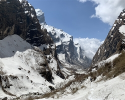

Annapurna Circuit Trek with Tilicho Lake
A Classic among Treks
Available Batches
Available Batches

Brief Description


Brief Itinerary
Detailed Itinerary
Day 1
Arrive in Kathmandu (1,400M)
Day 1 is reserved to make your way to the bustling capital city of Kathmandu. Its colourful, crowded streets packed with shops stacking trekking and climbing gear to their very top in addition to the many tourist hotels and cafes with high mountains in the backdrop is enough to suggest that trekking in Nepal is going to be a different experience. With crowds from across the globe sifting through the city in search of climbing gear suited for the highest mountains, this place is your best bet if you need to buy some top-class equipment, at the best rates, for your future climbs or if you are missing something for the one you are on now. The shops and cafes in Kathmandu accept Indian currency but you might want to take this day to exchange your money to Nepal currency since cash is the only medium of payment on the higher reaches of the trek. And the only money accepted in tea houses above is local currency.
Other than exploring the city and getting a taste of Nepal, we use Day 1 to settle into the new altitude in case you are coming from sea level. It is also a good time to meet your fellow trekkers and the entire team. We discuss some dos and don’ts, the route we will take and what to expect on the trail of this splendid trek known as the best long-distance trek in all of Himalayas!
Day 2
Kathmandu (1,400M) to Chame (2,550M) via Besisahar (760M)
Distance: 176 kms
Duration: 6 hours drive + 6 hours drive
After having spent the previous day amidst all the hustle of Kathmandu, we make an early start in our quest to leave the noise of the city behind. We leave the comfort of our hotels by 06:00 AM to make a short 10-minute drive to the bus stop from where we will start our long drive up to Chame. At the bus stop is where we get our shared local minibus which will drive us to the town of Besisahar through the Dumre-Besisahar-Chame Highway. The 176 km between Kathmandu and Besisahar takes close to 6 hours to cover. It takes about an hour to make it out of the city. From there on, the highway up till Dumre, which is 148 km from Kathmandu, is mostly comfortable with smooth roads. There are valleys to the left amidst lush green mountains with villages spattered all along their surface. Terraced farming lands rich with crop are a constant view for the next four hours while we continue to lose altitude. After we’ve reached warmer temperatures at 300M we begin to gradually gain height till we reach Besisahar at 760M – all the while going from cities to towns to areas with scarcer population still. The 30 km from Dumre to Besisahar may be bumpy – condition of the roads depending on recent construction projects or the damage caused by monsoons or landslides in the area.
Besisahar is where we stop for lunch and a little rest. This is also where we will need a change in transportation. Given that the roads now get narrower and rougher, we will shift from a minibus to a shared car. Whether we stay at Besisahar for the day, or make a move on to Chame will depend on the time we get to Besisahar and the condition of the roads for our journey ahead. It makes sense to reach Chame the same day since it is a better location to explore – much less crowded and much less constructed. It also is better for acclimatization for coming days since it is at a higher altitude. We would also eliminate spending one day in the car if we make the stretch up to Chame on the same day.
It is important to leave Besisahar for our journey ahead is fairly long as well. Although it is only 66 km, it will take close to 6 hours to make it to Chame because the condition of the roads is not the best here. Expect this to be a bumpy, back-breaking ride at the end of which awaits a charming village which falls under Manang district – one of the lowest populated districts in Nepal!
The entire route to Chame runs along the west bank of Marsyangdi River. Some trekkers choose to start their trek at Besisahar, and trek alongside this dramatic river all the way up to Chame. However, given that the trekking route is the same as the road, the clouds of dust every few seconds, from the passing vehicles on these dirt tracks, along with the fumes from the cars make it a less than pleasant hike. Hence, the better alternative is to drive up to Chame, give your body some time to acclimatize and start your trek from a less busy town.
Fifteen minutes into our drive from Besisahar, we get on a road flanked by forests and green mountains with rice and millet growing on terraced hillsides. Stone and mud houses painted in bold colours which are characteristic of settlements in Nepal are stippled all through the landscape. The river meandering below with the mountains on the other side patterned with houses, farms and farm animals spread across the lower flanks and thick forests on their higher reaches – 50 shades of green all the way through. As we go forward, the villages get smaller and farther apart before any sign of settlement completely disappears. You’ll see a lot of suspension bridges connecting the mountains on either side of the river for ease of movement for the locals. Waterfalls are aplenty all through the track, you’ll find one pouring out of a mountain-side every 20M or so.
The mountains here are a bit crumbly. And with all the construction work in the area, we need to factor in the time for the workings of a JCB and all its resulting consequences that might set us off schedule. As precarious as these kachcha roads with no fencing on the side are, they are also fascinating. The unfenced roads give you a straight and rather scary peek all the way down into the deep gorges by the side of the tracks. All the waterfalls make these muddy roads slushy and slippery with the accumulated water adding to the adventure. Three hours into the drive and you know you are nearing Chamje when you see the infamous Chamje waterfall. This is a good spot for some time out of the car before we carry on ahead.
Around 3 more hours from here and we are at 2,550M at a small village that goes by the name of Chame.
Day 3
Acclimatization at Chame (2,550M)
With the highest mountains stacked outside your wooden framed window and the sun peering from behind, turning them into all shades pastel to burnt red, Chame is a pleasant town to wake up in after a whole day of back-breaking drives on dirt roads. Lamjung Himal (6,983M) is especially handsome in the first morning light. Stone-walled houses and dirt roads with the river calling out with all its sounds, the sunsets in Chame are spectacular too as Manaslu North (7,157m), Manaslu (8,160m) and Phungi Himal (6,540m) rise skywards, glowing a fiery red in the dying twilight. Chame has well-stocked shops with a fair share of fried samosas and chips for all your seemingly unreasonable and untimely cravings. It also is the last town you might find a functioning ATM in, so if you need to withdraw some cash, do it today! There might be one at Manang too, but it is better to have two shots at withdrawing the much needed cash than one!
Chame is a common stop-hold on the Annapurna Circuit and hence has a profusion of lodges to choose from. You will also notice that the cost of food and drinks has gone up slightly as compared to Besisahar. This upwards incline in the cost of things is a steady trend you’ll notice all the way to the end of this trek.
After a warm meal around 9 AM, we set out to explore the surroundings of this settlement. A little movement at this new altitude will speed up acclimatization like nothing else. There is a less than 2 hour hike up the steep forested floors of Chame to get to the Chame View Point. The pine needles on the thickly forested floor on this 450M ascent make it exceptionally hard to find a firm footing making this short hike a walk to remember. It starts with crossing the village and over the river to the other side where a gradual incline begins. Once we are past the houses and the fields growing all kinds of crops, a steep climb begins. There is a well-marked trail or you could take the short cut straight up on your own path. Either way, it takes less than two hours to get to the top.
The Chame View Point is a freshly cemented platform on the highest point which offers unobstructed views of Lobuche Peak (6,119M) and Annapurna II (7,937M) on the one side and the slumbering giant Manaslu (8,163M) with all its seas of ice and snow on the other. The flurry of prayer flags and the trees towering just as high as the mountains in the foreground only make the view more worthwhile. With one eye on the entire village of Chame resting silently at the foothills, the jumpy river by its side and the big mountains in the background - there is not a thing missing about this picture. It is as close as one gets to a perfect view. Add a golden eagle or five soaring in the skies and it’s only a cherry on the mountain-top!
The hike down only takes 45 min. The hike is a total of close to 6 kilometers – going up and coming down. The village has two monasteries which adorn this quiet little place. With dogs running around and the cattle baying in each house, piles of firewood stacked up in one corner and the creaks on the wooden doors – locals in their warm clothes going about their daily chores, it is fascinating to take a walk around the village and discover how enmeshed the lives of people in Nepal are with these giant mountains and all of their givings.
Rest out what’s remaining of the day as we will start out on our actual trek from tomorrow onwards. And it’s only skywards from here on!
Day 4
Chame (2,550M) to Pisang (3,150M) (Click to View GPS data)
Distance: 15-16 kms
Duration: 5-6 hours
There’s a lot to see and a lot of ground to cover today. After a good night’s rest at the comfortable tea house at Chame, we have an early breakfast by 0630 AM and start our trek for today by 0700 AM. We leave the village of Chame, the flutter of those prayer flags, stupas and chortens behind and surrender to the Marsyangdi river to lead the way. Annapurna II towers unbelievably far above the whole valley, gazing silently.
As part of the recent stint of development which is still ongoing, there was a dirt road cut out all the way to Manang. Given that the old trekking trails are destroyed in places by landslides, we walk the route taken by vehicles for the most part and avoid it in places we can.
The trail starts out with alpine trees on both sides which climbs up gradually with small patches of descend. Mani stones and chortens are scattered along the trail. Mani stones are stone plates and rocks inscribed with Buddhist mantras adding to the inimitable vibe of the valley. They are placed alongside the roads and rivers or sometimes placed together to form a mound as an offering to the spirits of the place. The beliefs of the locals dictate that these structures be crossed from the left as a continuation of their belief of the universe revolving in a clockwise direction forming circular patterns which are seen as a repetitive pattern in all Buddhist customs.
At close to the three hour mark, we reach a suspension bridge to cross over to the other side of the river. These cantilever metal bridges dancing to the music of the winds are aplenty in all these regions of Nepal. Right after crossing the bridge, we go off the road and in to the pine forest to follow the old trail through these woods. The sharp sounds of various birds talking to the winds, the intoxicating sweet smell of the pines and the trance of the sparkling turquoise river down below are all a constant through this patch of the hike. We are gaining over 600M of altitude today – the entire route a relentless but steady slope upwards with patches of steep ascent.
There are a couple of places where you can get snacks and a chance to refill your water too. We rejoin the wide road an hour into this little detour.
One of the most fascinating things to watch out for on the trek today is Paungda Danda which stands out amongst all the splendid high mountains owning the entire view all through the trail. Paungda Danda is one of the lesser peaks to the southeast of Pisang Peak. Unlike other mountains that are known for their height, this one is notable for its western rock face which soars dramatically over 1,500M above the Marsyangdi River. The smooth sweep of this giant rock slab which appears to your right is famously called the Great Wall of Pisang. Composed of slate rock, Paungda Danda is locally referred to as Swarga Dwar meaning ‘a door to the heavens’. It is the locals’ belief that the bodies of their deceased go up this wall to get to heaven.
Another interesting thing to see today is what’s locally called the Dhukure Pokhari – the dove pond. The shape of this pond is said to resemble a dove – which is where it gets its local name. You can see the shape clearly if the water level in the pond is low at the time. There is a small stone temple to one of its sides surrounded by a flurry of prayer flags. The settlement close to this is named after the pond and lies at an altitude of roughly 3,185M. An hour from the pond we reach a point with two markers - we follow the trail marked Lower Pisang. The other one goes to Upper Pisang – a settlement nestled on the other side, clinging to the mountain face right below Pisang Peak. The walk to Lower Pisang is very relaxing and brings you to this medieval, countryside-looking village at 3,200M. Trees ripe with pastel pink flowers randomly appear around the village. Stone and wooden houses with narrow roads, long stretches of prayer wheels and the colour of prayer flags, mani stones and chortens, the veins of the river slowly slithering in the distance and the silent gaze of the most gorgeous mountains, this village is the stuff of dreams. Stairways made out of chopped out wood, yaks chilling in the wide landscape and stacks of firewood lining each house, the entire scene is so very refreshing. It is absolutely surreal to be in the presence of these massive mountains and all the life that they hold in this godly place.
If and when you get the time, take a walk up to Upper Pisang and attend the evening prayer at the monastery.
Day 5
Pisang (3,150M) to Manang (3,560M) (Click to View GPS data)
Distance: 16 kms
Duration: 5-6 hours
Today is a long day as well. Just like yesterday, we start early – with a 0630 AM breakfast. All these stop-holds on the Annapurna Circuit Trek are very comfortable tea houses with the warmest beds and the widest variety of food you might get on a trek. Comfort and food served to everyone’s taste are two things you don’t have to worry about at any point on this trail.
After our meal, we start our trek by 7 AM. Like yesterday, there is a dirt road that goes all the way to Manang which we take for the most part but will avoid in every section where a trekking trail is available. The roads themselves are not tarred but dusty and are enmeshed into the landscape – you won’t realize that they are any different than wide trekking trails until a car passes you by, leaving you covered in dust!
Not too far into our trek today, you notice that there is a dramatic change in landscape from Pisang, rich in alpine trees, all the way to Manang where the browns try to push out the greens donning a more rustic look! In this region which is in the Himalayan rainshadow on the geographical fringes of the Tibetan plateau, the vertical rock faces with muddy trails, dried shrubs scattered across the floor and weirdly shaped trees randomly emerging in the middle of the setting, all lend to making the trail to Manang bare a hard resemblance to the Wild West.
From Pisang, there are two routes which take you to Manang, the one which goes through the silent town of Humde and the other a bit more demanding which takes you through the villages of Ghyaru and Ngawal. We take the first route – the lower trail.
We cross the village of Pisang passing through the stone houses, lined by fields on a stone-paved path that goes through the village. Walking past the numerous prayer wheels lined right in the middle of the walking path all the way out to the end of the village, we head down across the river on a metal bridge and make a brief climb up to the chorten. We crisscross between the wide track, and its seemingly endless climb and escape to the thick of the forests to make a steep incline wherever possible to cut down on some long curves of the road. Soon the forests end – the change in landscape is as quick as a wink! Dirt paths crisscross like the veins of a river as rock faces stand straight and tall with bushes scattered across the dirt floor and pine trees randomly about. Walking through this landscape, it is hard to shake off the feeling that you might see a ranger with their noose and their cowboy boots on their horses come galloping about from around a corner at any minute!
Anyway, now in a more desert-like landscape, we make the seemingly endless but comfortable climb to Bgoro Danda col (3,440M) where the view opens out to accommodate the entire Humde Valley framed by Chulu peaks. Passing by the peculiar ochre-coloured cliffs we advance to Humde – a sleepy town with an airstrip bang in the middle of the valley. The airstrip here is barely used especially after the introduction of the dirt road. At Humde, we are now halfway through today’s trek and this village makes a perfect spot to stop for lunch. You will also find toilets around the village, which can be used.
At the end of the town, the view once again opens up to accommodate the river, and the snow-capped mountains pushed to the background replaced by strangely contoured turrets eroded into phantom-like shapes, in the foreground. The landscape is now a strange geographical art dominated by the many shades of brown on this dry meadow. In the background are the sun-bathed silhouettes of Annapurna II, III, IV and Gangapurna. Here on out, Annapurna III and Gangapurna are a constant and unreservedly dominate the view. Turn around and you see the stunning Paungda Danda and Pisang Peak one more time. And to the other side are an endless rows of arid, serrated ridges below the glitter of the snowy Chulu peaks. Across the river rests another settlement that goes by the name of Mungji (3,480M). This town which seems to have more goats than people is an indication that we are now not far from our destination for the day. It also has sign boards guiding you in the direction of Ice Lake and the famous Milarepa Caves. You might want to return to these tomorrow.
A short hike from Mungji brings us to Braka (3,500M). Braka to Manang is another 30 mins through the dusty, deserted land with wild horses and yaks either nibbling away at the last tufts of green shrubs in the area or simply lazing around. This short hike takes you through rows and rows of chortens and mani walls until you reach the last bit of steep ascent which brings you into the village of Manang with countless lodges, tea houses and bakeries selling local bread. Entering this small village with a local population of close to 200 is like entering a time warp. Its ancient stone and wooden houses with the stone-paved paths and rows of prayer wheels with locals and tourists out and about in this pleasing village, soaking in the afternoon sun, is a sight as refreshing as a bowl of ice cream on a hot summer city afternoon.
This small village has everything you might need, from small shops selling trekking gears to a tourist center and a medical clinic – do not count on these being available for service though because although the structure exists, they might not always be manned. This is also your last chance to restock your cash or exchange your cash to NPR although you might not get the best rates here from locals.
Expect to reach Manang by afternoon. The tea houses here are cozy and intimate and serve the best food. There are also plenty of small, local cafes which serve the best coffee and desserts.
Day 6
Acclimatization at Manang (3,560M) (Click to View GPS data)
There couldn’t be a place better to take an acclimatization day off, than Manang. However, given how much there is to see in and around Manang, don’t be surprised if your day off becomes more hectic and tiring than your usual trek days.
Some of the known places to explore around Manang are:
A. Monasteries:
Each of the villages around Manang have a collection of gompas of their own. Some which make the popular list however are Bodzo Gompa, Kama Dorje Gompa and Praken Gompa. This is a sort of circuit which takes close to 3-4 hours to cover. There may not be defined paths leading to these, so check with locals before you head out to visit these monasteries. From their airy vantage points, the panoramic view of the valley below and the entire Annapurna barrier around is nothing short of breathtaking. While the outside is beautiful, the inside of gompas has much to offer too. The paintings on their walls, the colours of stories depicted on clothes hanging from their ceilings, the main chambers, the courtyards, and the overall vibe of these structures planted on the very top of these humble settlements is exquisite, especially when there is no one else around to disrupt the peace.
B. Gangapurna Lake:
The Turquoise Lake below Gangapurna is a favorable choice if you want your rest day to be short or if you want to explore multiple places and use your time in Manang as best you can. A view of the massive glacier with all the heaps of snow and all its cracks is extremely captivating even from far. Getting to the lake provides for even better views. This glacial lake is formed from the melting of glaciers from Gangapurna, Annapurna IV, Khangsar Kang and Glacier Dom. To get to the lake takes close to 30–40mins. There is another view point which is much longer and might take 3-4 hours for a round trip.
C. Ice Lake:
Ice Lake is at an altitude of 4,600M which is roughly a 1000M elevation from Manang. The hike up to Ice Lake is roughly a half day affair and is physically strenuous but it will prepare you better for the heights we will hit in the coming days and hence makes for a good acclimatization excursion. It starts by tracing your steps back to the board we had found on our way to Manang yesterday. Head back to that sign board and walk in the direction indicated. It is hard to lose your way since the entire route is marked using blue and white markings. The ascent is unforgiving but you don’t have to go up all the way. The views are sensational all along the trail too. However, if you get to the top, there are two lakes. These are unmarked so it might be confusing which one is christened Ice Lake – it’s not the first one! Keep walking ahead, until you see a small prayer structure with prayer flags fluttering around it – that lake is the one you are here for! How close the big mountains seem from here is riveting. You are face to face with some of the biggest mountains and how that can make you feel is unparalleled. The view of the lake itself will vary based on the season you visit.
D. Milarepa’s Cave:
The caves are at an altitude of 4,100M which is a 600-700M climb up from the altitude we are at. Getting here and back will be between 4-5 hours. For a trail to the caves, trace your steps back to where we found the sign board yesterday. A small wooden bridge will take you to the other side which is a massive green meadow with dozens and dozens of unbridled horses and yaks soaking in the sun. You could sit there for hours watching the young ones jumping around in puddles of water, playing catch with themselves and pulling on the tails of the older ones in the herd. To sit here and watch this amidst the quietest and the most beautiful of settings with high mountains in the background is indescribable. To witness these gentle giants play with their young is the most heart-warming thing ever!
Coming back to the caves, there are a lot of stories associated with them – a lot of folklore and a lot of beliefs tied together with these caves with handprints inside and a gompa at its entrance. Even locals usually only go up till the gompa as the actual cave is apparently located in a gully and its approach is through a steep scree slope.
Besides these there are a lot of unknown and lesser known places and beautiful corners which you can explore on your own as you walk out and about in Manang. But if you want to skip all these and just sleep in for the day, that’s okay too! Manang may be the last village where you receive network if you are on international roaming. Tea houses are kind enough to spare their wi-fi connections too.
Day 7
Manang (3,560M) to Shree Kharka (4,045M) (Click to View GPS data)
Distance: 7-8 kms
Duration: 4 hours
The day is not as long as our previous days; we can afford to sleep in a bit more today. After a comfortable night in the tea house at Manang in the company of Gangapurna and its glaciers looking right at you through your window the whole time, we set off by 08:30 AM. Our destination for today is Shree Kharka which sits at an altitude of 4,045M.
It takes not more than 5 minutes to cross through this medieval-looking village and what lies right outside is sheer gorgeousness. At the end of these stone houses are large fields of crops growing in the region, blades of green sway to the tune of the winds in stretches of hexagonal land with the backdrop of Gangapurna and Annapurna II, III, IV all dressed in white. The bright green of the fields with the river snaking out to find the place where the land meets the haze down below, the browns from the stone houses somewhere in the middle of the landscape as you look back and the white of all the snow-capped giants above, the beauty and the magnanimity of this scene is overwhelming yet humbling all at the same time. After half an hour of walking, we see a diversion – a road that goes down and a trail that goes straight up ahead. We take the narrower trail straight up which is a trekking trail. Fifteen minutes on the trail and we hit a cable bridge which takes us to the other side of the river. Half an hour after the bridge we find ourselves on a broad road again – a metal gate opens up to say ‘Welcome to Khangsar’. Twenty more minutes after the gate and we reach the village of Khangsar. Tea houses are aplenty in the village – a good place for some hot tea and snacks before we go ahead.
Archery is a famous sport in these regions of Nepal – watch out for men dressed in white robes with some bows and arrows just in case you are around in the season for archery competitions. Football is another sport which is quite popular as local boys dressed in jerseys representing their villages play to compete with other villages in their district on the vast open stretches of land in the region. These competitions receive quite an audience too, of locals, tourists and trekkers alike.
Another half hour after leaving from Khangsar and we hit another split in the trail – one broad road going to the left which is used by vehicles and a narrow one that goes up. We take the one that goes up – although it is steep for about 200M, but it is much shorter than the broad road which takes you around and then up. The markings to indicate the trail go towards the broad road, but the narrow trail straight up takes you to the same place. After a forty minute climb, and a short way further, we are at our destination for the day. The trail to Shree Kharka is beautiful through and through but especially after the bridge. The mountains up ahead look so close like you are walking directly into them – bushes and wildflowers on both sides on a dirt trail so narrow, you can only place one foot in front of the other. It is a short and easy day, save the last ascent which is also not overly strenuous. Temperatures here drop to 6-7 degrees by evening and dip further down at night. It’s no worry though, because the tea houses here are amply cozy with comfortable beds, warm meals and blankets thick enough to keep the wind from getting to you.
Do take a walk around the village and some trails on the dry, brown mountains around to get better acclimatized to this new environment and altitude.
Day 8
Shree Kharka (4,045M) to Tilicho Base Camp (4,110M) (Click to View GPS data)
Distance: 6- 7 kms
Duration: 3 hours
After how much we’ve done the last couple of days, today seems like something you can do with your eyes shut. Blue sheep and mountain goats make the trail on the loose mountains today a little precarious though – them jumping around in their dry, arid homeland on the upper reaches causing the tumbling of rocks of all sizes coming at you at all speeds. It would serve well to watch out for these playful beings; as adorable as they may be, their playfulness could prove to be dangerous! In these regions, they remain well camouflaged too, since they match the colour of these barren brown mountains made of loose rock and mud.
We have breakfast by 07:30 and leave by close to 08:00 AM. We start off on a path resembling yesterday’s - climb up a steep 100M incline after which the trail is like humps on a camel’s back – goes up and down over and over again! Half an hour into our day, we cross over to the other side of the river using a bridge. The bridge runs over a deep gorge with the river bubbling underneath. The mountains here are dry with pillars of mud shaped like massive termite mounds which dominate the scenery and add to the drama of the landscape. The route on the other side of the bridge is precarious as it climbs up on barely a trail on a crumbling mountain, for the lack of vegetation to hold its surface, with a vertical drop into the gorge. This section is just about 50M before we get to the safe trail again which climbs up on an incline but is sturdier and provides for firm footing.
The entire trek for today is on sliding trails going up and down on slim paths along the very edge of the crumbling mountain face. The trails get narrower, the mountains get grander and the views more spectacular. We have now truly entered the no vegetation, rocky, dry and arid zone where the mountains are a 100 shades of brown and provide for no firm footing. We are now officially walking in the middle of those strange looking, extremely high mud pinnacles we had been witnessing from far off all those previous days. These seem even higher and stranger as you walk through them, like lost civilizations from the past.
Another fascinating thing about Nepal is that it is such a cauldron of languages and cultures – a global culmination. You start to see familiar faces on these unfamiliar trails by now – people speaking different languages from different geographies who started off as strangers but are now as known to you as these mountains.
After an ascent of close to 400M for the day, expect to reach deserted mountains of Tilicho Base Camp by 11 AM. The day today ends quickly but do go around the trails on these barren mountains in order to be better acclimatized for the days to come where we will only be going further up.
Day 9
Tilicho Base Camp (4,110M) to Shree Kharka (4,045M) via Tilicho Lake (4,920M)
Distance: 18 kms
Duration: 10 hours
Every trek has one climax day, but not ACT. Annapurna Circuit Trek has two! One is the day when we cross the pass and one is today, when we start before the sun gets to work and amble our way to the electric blue glacial lake which delightfully owns the snow laden landscape high up at the altitude of 4,920M. It is an arduously steep climb, much on loose moraine.
We leave as early as 04:30 AM with our packed breakfast. We climb through dry mountains full of mud and gravel with the river down below and snow-clad mountains on the other side. Depending on how low the temperatures dipped to on the previous night, we might also find morning dew frozen solid on top of the few blades of grass on the side of the narrow trail and few of the last purple flowers you will see today. The air is dry and so is the terrain. When the sun comes up behind you, it is nothing short of magical – the sudden light on the trail, the properly defined rays from behind the mountains bringing everything in your surroundings to life. Landslides have broken some parts of the well-defined trail making them slippery and hard to walk on – rolling stones make it even more difficult. After walking the endless hairpin bends that the trail to this high-altitude lake is made of, we enter the snow area 2.5 hours into our day. After a steep and continuous ascend where we gain as much as 800M, we reach a sign board which indicates the way to Tilicho Lake. The sign post and the blue and white pole, which is used to mark the path all the way up to the lake, brings with it a sort of optimism that the lake is close by.
However, to believe that is only to seek disappointment for the lake is still an hour away as you cross one pole after the other after the other after the other! The terrain is mostly flat but full of shin-deep snow sitting in all shapes strangely carved so by the fierce winds of the altitude. The surface of the snow looks much like waves frozen in time – it is fascinating although endless! White is the only colour you see now until we get to the lake. Depending on the season and the snowfall, you will either find an electric blue lake waiting for you at the end of the trail or you find a massive field of ice smooth enough to play a game of ice hockey – and you can only imagine the lake as it would be under that thick sheet of ice. Either way, its beauty is inspiring to say the least. The 6 kms to the lake from the base camp take close to 3-4 hours. There is a board there which gives you all the details of the lake. The only colour you see around you is brought to you by the hundreds of prayer flags fluttering in the wind by the small temple that we find right before the lake.
After spending a bit of time here, we head back down to the base camp through the same route. This time around, it seems shorter because it’s mostly descent. We reach back down to the base in less than two hours. We take some well-deserved rest here, freshen up, have lunch and sit by the fire to dry ourselves out after our early morning escapade. Tilicho Lake has been a nice detour, but now we have to go back to the trail which takes us around the massif. We leave the base camp shortly after enough rest and food, in order to make our way back down to Shree Kharka.
The 7 kms to Shree Kharka should take us a little more than 2 hours since it’s a familiar route and we are losing altitude. If you remember from Day 8, the route was up and down which means that we have to go up on all the downs we got while getting here. That might feel a bit painful after all the exercise from this morning, but it’s not a lot. The trail to Shree Kharka gets narrow and dusty again – remember to respect the climbers coming the opposite way and give them space to pass you on this trail which is narrow enough to accommodate only a single trekker at once.
The mountains on these trails are so high and so close – it’s fascinating to think that you cannot accommodate the entire mountain to fit your field of vision all at once! Anyway, it’s been a long day. Rest it out for tomorrow because we have a long way to go in the coming days.
Day 10
Shree Kharka (4,045M) to Ledar (4,240M) via Yak Kharka (4,000M)
Distance: 10 kms + 3 kms
Duration: 6-7 hours
With the lax days of the first leg of our trek behind, we move on to thinking about climbing the cruel pass which lies at a demonic height of 5,416M – and today marks the first of many days of our journey towards this new milestone. Unless you have experienced high-altitude before, you are in for a world of experiences which might seem torturous at the time but after goals that were set have been achieved, we won’t be surprised if you find yourself wanting more of this pain!
After a good half day’s break yesterday, we set out for Ledar by 8:00 AM. It is 10 kms to Yak Kharka and an additional 3 to Ledar. Yak Kharka has a lot of options for stay, but it makes more sense to cover a bit more distance for tomorrow and get ourselves to Ledar.
Not too long ago, Yak Kharka and Ledar were abandoned stone shelters, completely ignored by trekkers going up to Thorang Phedi. But ever since altitude’s starting getting a bit more respect, these places are being looked to as legit stop-holds by trekkers on their way to the foot of the pass. Since then, these places have seen the opening of some very comfortable lodges and decent cafes.
The gradient is not so steep, but it may feel difficult because of the altitude. Half an hour into our day and a 120M ascent, we get to the abandoned village which is now all but ruins of what once might have been a thriving local settlement. From the ruins you can see that you are once again moving towards greener pastures. The mountain below is cut out in steps to grow crops – hoards of wild yaks, horses and blue sheep loiter around as far as your eye can see.
An hour and half into our day, we reach to the top of a hill with the most magnificent view of what lies below. A meandering river snaking across the landscape, village at the foothills surrounded by lush green agricultural land spread out in various geometric patterns, the peculiar termite mound-like structures spread across the view – you can see the entire valley for kilometers ahead with Gangapurna, and Annapurna II, III, IV standing tall looking down at the same view as us. From here, we make a steep half an hour descent and lose all the height we gained and then some. Once we get all the way down, we cross over to the other side on a longish bridge swinging right above the river. Over to the other side, it’s all uphill from here. We once again have to make up for all the loss of altitude. There are a few tea stalls here just in case you need to regain some of that lost energy.
An hour and a half after we begin to ascend again, we are at Yak Kharka. The trail is well marked with coloured stripes on every rock you find on the way, so there is no question of getting lost. Yak Kharka has a few options if you want to have your lunch here. If you can hold out for one more hour, you can directly reach Ledar and have lunch there after you settle into your accommodation. Whichever you decide, make your decision quick since the sun packs up from Yak Kharka rather early which brings a sudden dip in temperatures making it a cold place to wait around at.
Yak Kharka to Ledar is barely any distance and on flat, open land too. There are yaks and horses all along the way, just going about their business. Ledar is right across the metal bridge you get to after a straight walk for not more than an hour. It is not a busy place, just a few lodges/ tea houses which might or might not be hosting a few trekkers depending on the season you visit.
Day 11
Ledar (4,240M) to High Camp (4,850M) via Thorang Phedi (4,540M)
Distance: 6 kms
Duration: 4- 5 hours
Today isn’t all that long but it would help to get to High Camp as early as possible since options for accommodation at this altitude are slim (110 rooms) and fill up quick in high season. Although the route is not long, we start to feel the effects of altitude which is likely to slow us down.
We leave early by around 07:30 AM. After a steep ascent of 150M which takes close to 40 minutes to cover, we hit a small patch of descent and then a flat trail for 10 minutes. Stop and look behind or you are at a risk of missing yet another mesmerizing view of Annapurna III and Gangapurna blushing all shades of red in what is just another spellbinding Himalayan sunrise. The route is well marked all the way – look for red and white stripes on rocks which are marked at regular intervals. At the 50 minute mark, we reach a diversion. There are two paths, one which continues forward and one that goes down to the suspension bridge. Both of these take you to the same place so you can pick either. If you have developed a taste for swinging metal bridges, then this route would suit you well. For each route there is a steep incline after crossing over to the other side of the river – of only about 35M.
The 5 kms from Ledar to Thorang Phedi should take close to 2 to 2.5 hours. Encircling Thorang Phedi are ragged cliffs, crags and ridges. Phedi which is a Nepalese word, literally translates to ‘bottom of the pass’. There are options for stay at Thorang Phedi if you want to stay there. However, it is advised to climb up to High Camp so as to cut down on distance and altitude gain for tomorrow. It also is better for acclimatization since we cut down on sudden elevation gain tomorrow as we climb up to the pass.
Accommodation and food at both places are matched in quality so don’t let that be a decision for where you take a stop for today. High Pass is a 310M steep incline on crumbly but well-defined trail through the last boulder area for the day – it should take less than an hour. Since we get to Thorang Phedi by 10:30 AM, we have all day to leisurely climb up the 310M to High Pass – there is absolutely no rush. There are blue sheep everywhere to keep you company, too! But whether to go to High Pass on the same day is a decision which is left to the group based on how each person is feeling at the altitude and how confident each person feels about climbing higher up.
High Pass has 110 rooms which are either double or triple occupancy. There are 4 common toilets and one massive dining area divided in multiple sections. The kitchen serves all kinds of food like pancakes, pastas and pizzas and even beer! The wooden indoors are enough to keep you warm and unaffected by the cold wind outside. There is a short acclimatization walk which you can make on your own just to feel more ready to climb to the pass tomorrow and to expose yourself to the mountain wind at this altitude.
It does get busy in the dining area with people from everywhere who were previously scattered across different tea houses, now congregated in this one small space. Everyone doing their own thing – some socializing, some reading, some playing cards and everyone swapping stories – there is enough to do here!
Day 12
High Camp (4,850M) to Muktinath (3,765M) via Thorang La Pass (5,416M) (Click to View GPS data)
Distance: 3.5 kms + 12 kms
Duration: 2.5 hours + 4 hours
The common dining area on the previous night is buzzing with everyone asking each other questions like what time do you leave? Where is your stop for tomorrow? How cold do you think it will get? How many layers are you going to put on? What will you eat so early in the morning? Do you think you will eat anything at all? It almost feels like one big group instead of a collection of small groups and individuals making their way to the pass.
Today, as everyone gets off their warm beds in the dead of the night and amble into the dining room again by 4 AM, the room is a mix of yawns and screams of excitement – well, screams of excitement as they’d sound when mixed with yawns, more like!
We start early right after breakfast by around 5 AM. It still isn’t bright enough yet – we will be climbing in torchlight; so be extra cautious. The trail which zigzags up and up is extremely narrow and can get slippery with patches of ice and moraine. Make sure that you have enough battery in your head-torch for you might need it for at least the next 2 hours. If you stayed back at Thorang Phedi the previous night, you might have to leave even earlier and cover more distance in addition to gaining more height. So get your resources in place accordingly. It is important to carry at least two liters of water since the climb is extremely tiring and the air very dry – keeping your throat wet with water might help make it feel less scratchy. The first hour is truly tiring as you climb up a narrow gully in the thick of darkness. But with the first flush of dawn comes a new surge of energy as the glorious view makes an appearance. To look at these high mountains in the first light of the sun, it is so easy to naturally surrender to the beliefs of the locals about them being home to the Gods. Gangapurna and Annapurna III get flushed with the changing colours of the sun looking ever so glorious. Given that it is all a continuous and rather steep ascent, it helps to set a pace and maintain a rhythm.
The entire trail is through soft, dusty mountains which seem like you could blow them out of existence. After a series of humps, you start to see snow appearing in various patterns, chunks, stripes, and everything else you can think of. The view, for sure does its bit to keep you motivated to carry on in the cold. The last bit to the pass can be a bit of a frustration as a series of false summits make an appearance. But the 4 kms to the pass take not more than 3 hours. Remember never to take altitude too lightly, always be wary of your body and listen to what it’s trying to communicate to you.
Look out for a mound of stones draped with numerous prayer flags. When you get to that and feel yourself being pushed in all directions by the deafening wind, know that you have reached the infamous Thorang La Pass. The wind here is icy and brutal, it wouldn’t be so bad to take some photos, have a brief celebration, have some hot tea at the tiny tea house at the pass – which seems to be the only place to provide some respite from the relentless winds – and start your descent. It is not a good idea to be exposed to these winds at this height for far too long. It’s going to be a long, hard, tiring journey down to Muktinath through miles and miles of deserted mountains with not a sign of any settlement into the far distance towards the horizon.
It is a good idea to stop and admire the magnificent landscape across the Kali Gandaki Valley as it changes form and colour. The trail snakes down the dry land on ridges and moraine. There are a lot of mountains to spot and name but the highlight is when the mighty Dhaulagiri makes an appearance. The trail, in places, may be soft and slippery due to broken sections from landslides. Look for red and white strikes to keep on the trail. You witness a constant change in scenery as we go back to green lands and hard rocks from these dusty mountains. At the end of this long descent, with quivering knees, the sense of achievement is rather indescribable. Remember at the end of the sharp and endless descends awaits a hot shower and some mouth-watering food! Oh and Wi-Fi is back!
Day 13
Muktinath (3,765M) to Jomsom (2,880M) via Lubra (2,990M) (Click to View GPS data)
Distance: 10 kms + 9 kms
Duration: 5-6 hours
Today is the last day of the actual trek since tomorrow we get into a bus to head out to Pokhara. If you thought that you have seen all the beauty there is to see on this trek, you are in for a surprise. The specialty of Annapurna Circuit Trek is that each day on the trail is a worthy climax to this story. There are many ways to get from Muktinath to Jomsom including buses/jeeps. The route through Lubra is one which is absolutely enthralling and that is the one we take today.
There is no rush today since the only thing on the agenda is to get to Jomsom which is a comparatively larger city and is at a much lower altitude. We take the morning to explore Muktinath – it is a famous pilgrimage center which has shrines sacred to both Hindus and Buddhists. There is a lot to be explored and discovered in and around Muktinath.
We leave Muktinath at leisure - whenever everyone is ready to start. The only thing to remember is that getting to Lubra takes close to 3.5 hours and we need to get there by lunch. Once we leave, it takes 10-15 minutes to cross the busy town of Muktinath which is bustling with cafes and tourists alongside the regular bustle of locals going about their day. To the left you see a trail barely noticed by anyone in the accumulated crowd in which everyone is trying to figure out their next bus/jeep out of Muktinath. This ignored and isolated trail snakes up in to the dry terrain to our left. With mountains high and dry, towering to our left, the valley to the right is stippled with small hamlets and apple orchards – the only green you see in the landscape. There are also cattle, horses and yaks spread across the entire scene. This is not an extremely popular route taken by trekkers; we wouldn’t be surprised if you don’t come across anyone all the way to Lubra village which is a little more than halfway to Jomsom. The landscape and terrain for today is so very distinct and jaw-droppingly gorgeous all the way through. There are ascents on the trails and some of them quite steep, but the view dominated by Dhaulagiri, the solitude on the trail and the magnificence of the landscape all lend to making this the most leisurely day of all. It is invariably a relaxing walk down through the arid countryside to the dry, stony windswept Kali Gandaki Valley.
The location of Lubra in addition to the distinct terrain the trail takes you through is what lends to it being a sight nothing short of spectacular. This small high-mountain settlement which is constructed vertically along a straight mountain face on these barren mountains is the perfect place to rest out, have lunch and enjoy your time out of the lashing wind. The main settlement of Lubra is across a long suspension bridge along the riverbed and up to the left. It should take us close to 3 to 3.5 hours to get here. A small tea house there serves fresh, home-made food – do go to check out their home kitchen and get a peek into the traditional arrangement of life in this village as in others in the region. The valley receives so much wind, it’s hard to keep yourself grounded! After lunch we cross the river bed to go to the slopes on the other side and battle through the wind-blown afternoon down Panda Khola and then along the main trail to Jomsom which is where you now start seeing vehicles after a solitary day out in the mountains.
Expect to reach the bustling trading center of Jomsom by late afternoon. The lodges lie towards the end of the town close to the airport.
Day 14
Jomsom (2,880M) to Pokhara (820M)
Distance: 160 kms
Duration: 9 hours
Buses start by 9:00 AM. Today is one long, back-breaking journey all the way to Pokhara which is 2000M below Jomsom. These local, dilapidated buses plod through the narrow, unfenced mountain roads at the very edge of the mountains with the valley straight below. We are now moving to lower lands and it is going to get very hot and crowded. The scenery once again changes to accommodate bigger villages and green mountain faces.
Expect to reach Pokhara by evening. We would recommend you book your travel onwards not before the next day.
Day 15
Buffer Day
This day can be used anywhere in the itinerary for acclimatization/rest.
What's Included
- Accommodation in Kathmandu and Pokhara on twin sharing basis with breakfast
- Accommodation in guesthouse/lodge on all trek days
- Permits (Upto the amount charged for Indian nationals)
- Experienced Local guide
- Backpack Offloading of upto 10 kg per participant
- Three meals (Breakfast, Lunch & Dinner) a day during the trekking (open menu to choose one item per meal from the menu). Order more at your own cost.
- ACAP (Annapurna conservation area permit)
- Group airport transfers
- Transportation from Kathmandu to trek road head & back to Pokhara
- TIMS (Trekkers Information Management System)
What's Not Included
- Any Expense of personal nature.
- Any Expense not specified in the inclusions list.
- Any meals during hotel stay in Kathmandu & road journey
- Any tip to porters or guides which is a customary thing in Nepal
- Travel Insurance and Rescue Evacuation in case of emergency
- Gaiters, microspikes and sleeping bags (wherever necessary) are not included and thus have to rented from Kathmandu by you.
- Additional Permit Fee for Non Indians & OCI Card Holders
Are you Eligible for this Adventure?
Annapurna Circuit Trek is 155 kilometers of sheer awe, divided into approximately 12-15 kms per day. It takes you to an elevation of over 5,400M at Thorang La Pass making it a difficult level trek perfect for someone with prior trekking experience looking to level up by a notch! This trek puts you through some really exciting challenges.

BRS Level Required
This makes it mandatory for you to have high-altitude experience of preferably multiple treks marked at level 4 on the BRS. The altitude, the terrain and the nature of the climb demand a certain level of skill and a need for you to be aware of how your body reacts to the various features of a high altitude environment.
If you do not know what level of BRS trek would suit you best, worry not! Fill out this Form:

we will send you a progression chart to help you comfortably get out of your comfort zone in order to level up and ultimately reach your highest potential in the big, bad world of outdoor adventure.
Packing List
This is a list of essential items for individuals doing the trek with Bikat Adventures. This list contains only those items which the participants are required to bring with them. The list excludes those items which are provided by Bikat Adventures on the trek. We have divided the items into five categories. All the items in the list are essential except for those marked as optional.
Trekking Gear
- Ruck sack bag with rain cover. Qty -1
- Day Pack Bag - Recommended for treks with summit day
- Head Torch with spare Batteries. Qty -1
- U V protection sunglasses. Qty -1 Here is how you can choose the best sunglasses for trekking.
- Water Bottles: 2 bottles of 1 liter each
Footwear
- Non-skid, deep treaded, high-ankle trekking shoes Qty -1
- Pair of light weight Slipper/Sandals Qty -1
Clothing
- Quick Dry Warm lower or Track Pants. Qty - 2
- Full sleeves T-shirts/ Sweatshirts. 1 for every 2 days of trekking
- Pair of thick woolen socks. 1 pair for every two days of trekking
- Thermal Body warmer Upper & Lower. Qty-1
- Undergarments. Qty - 1 for every day of trekking
- Warm jacket closed at wrist & neck .Qty-1
- Full sleeves sweater. Qty -1
- Rain wear ( Jacket & Pants ) . Qty-1
- Pair of waterproof, warm gloves. Qty-1
- Woolen cap. Qty-1
- Sun shielding Hat. Qty -1
Toiletries
- Personal toiletries kit (Small Towel, Toilet paper, paper soap, Bar soap, toothbrush, toothpaste, cold cream, etc.)
- Sun screen lotion small pack. Qty -1 Here is your Sun Protection 101 to stay safe in the bright sunny outdoors.
- Lip Balm small pack. Qty-1
Utensils
- Small size, Light weight & Leak proof lunch box. Qty-1
- Plate. Qty- 1
- Spoon.Qty-1
- Tea/Coffee (plastic) Mug.Qty-1
Miscellaneous
- Camera (Optional)
- Carry your medicines in plenty in case you have any specific ailment. Consult your doctor before joining the trek.
- Dry fruits, Nuts, Chocolate bars (Optional)
Frequently Asked Questions
Annapurna Circuit Trek with Tilicho Lake is suitable for trekkers with prior experience, having completed at least one BRS 4 level trek or equivalent.
If you can Jog/Run for 5 kms in 25-30 mins, you are ready to take on this trek. Once a week, you can practice running 10 kms in an hour or so to improve your endurance further. In addition to this, you can also add resistance workouts to your schedule like squats, lunges, push ups etc.
If you cannot do the above, there’s no need to worry. It is important to remember that it’s all about practice. Get on a training schedule and we can assure you that you will meet these standards in a matter of a few months.
A certain level of fitness and physical endurance are required to take on any high-altitude trail in the Himalayas. Basic knowledge of ascending and descending on steep gradients, high-altitude attire and layering and mountain mannerisms will be helpful.
The minimum age limit is 13 years. However, minors between 13 to 17 years of age should be accompanied by their parents/ guardians. If you are above the age of 60, kindly carry a medical certificate from your doctor that deems you fit for adventure activities like trekking.
The Annapurna Circuit Trek with Tilicho Lake is located in the Annapurna region of Nepal, in the central part of the country. The Annapurna Circuit Trek with Tilicho Lake is a variation of the classic Annapurna Circuit Trek that includes a side trip to Tilicho Lake, one of the highest lakes in the world.
The Annapurna Circuit Trek with Tilicho Lake is a fascinating trek that takes you to the Tilicho Lake, which is situated at an elevation of 4,919M, making it one of the world's highest lakes. The trek also offers stunning views of the Annapurna and Dhaulagiri mountain ranges, including the world's tenth-highest mountain, Annapurna I, with various peaks, glaciers, and valleys to explore along the way. Additionally, the trek will take you through traditional villages, offering a chance to experience the culture and lifestyle of the local people, including the sight of Buddhist monasteries, chortens, and prayer flags. Moreover, you will have the opportunity to interact with the friendly locals. Throughout the trek, you will traverse diverse landscapes, including subtropical forests, alpine meadows, and high-altitude deserts, with a variety of flora and fauna to encounter, such as rhododendron forests, blue sheep, and Himalayan pheasants. Read more: Highlights of Annapurna Circuit Trek
The Annapurna Circuit Trek with Tilicho Lake is of moderate difficulty and demands a reasonable level of physical fitness and prior trekking experience. With the highest point at an altitude of 5,418M, trekkers may face altitude sickness, particularly those who are not acclimatised. The trail is characterised by steep inclines and declines, uneven surfaces, and some narrow and rocky pathways. Read more on challenges here: Who is it meant for?
The Annapurna Base Camp trek can be undertaken during two seasons - Spring (April) and Autumn (October).
The accommodation for all days of the trek will be provided in a guesthouse or lodge, generally called tea houses in Nepal.
During the Spring season, temperatures during the day are comfortable at around 20 °C, but at night they drop significantly to nearly zero degrees.
In Autumn, the temperatures resemble those of Winter, with cool and chilly nights. In October, the temperature can drop as low as 0 °C, while daytime temperatures typically hover around 15 °C.
The Annapurna Circuit Trek with Tilicho Lake is not considered to be a technically challenging trek, but it does require a moderate level of physical fitness and some trekking experience. The trail involves some steep ascents and descents, uneven terrain, and some narrow and rocky paths, particularly in the first few days of the trek. Additionally, the altitude can be a challenge for some trekkers, with the highest point on the trek reaching 5,418M. However, the trail is well-maintained, and there are no technical climbing or mountaineering skills required.
The base for the trek is Pokhara, which is well connected from Delhi by air and land through Kathmandu.
By Air: There are multiple daily flights from Delhi to Kathmandu.
By Rail: You can take a train from Delhi to Raxaul Junction in Bihar on the Indo - Nepal border. From Raxaul, take a 5 km bus/taxi to the border, from where Kathmandu is a 10 hour road journey. Buses and taxis are easily available at the border.
By Road: The road distance from Delhi to Kathmandu is 1,145 km. There is a Delhi Government luxury bus service from Delhi Gate to Kathmandu that takes around 36 hours. This is the most time consuming but budget-friendly option at INR 2300 for the bus journey.
Kathmandu to Pokhara: From Kathmandu, you can opt to fly to Pokhara, or take one of several shared cabs that ply on the route daily. Since the trek starts from Pokhara you can take regular buses and taxis that ply from Pokhara to Kathmandu. Pokhara is also accessible from Delhi by road or rail.
There is 3G connectivity for local network NCell for most of the Annapurna base camp trek. Read more: Comprehensive Guide for Trekking in Nepal
The closest ATM to the Annapurna Base Camp Trek can be found in Kathmandu or Pokhara.
You will have to arrive at Pokhara on your own. It is a well established tourist location and is easy to reach.
We will be staying overnight in Pokhara on Day 8. Depart early in the morning on the next day.
Kathmandu, Nepal's capital, is a vibrant, noisy city. Packed full of history, palaces and temples, it is also within touching distance of Nepal's premier attraction: the Himalayas. Kathmandu is home to places like Durbar Square (with temples dating back to the 12th century), Boudhanath Stupa (a world heritage site), and Pashupatinath Temple (the country's most important Hindu temple, on the banks of the Bagmati river). Another must-see attraction is the Royal Palace, the site of the infamous 2001 massacre of the Royal Family by the then Crown Prince, which is now converted into the Narayanhiti Palace Museum.
Pokhara is another popular tourist destination in Nepal that is known for its stunning natural beauty, scenic lakes, and panoramic views of the Himalayan mountains. You can visit Phewa Lake, the second-largest lake in Nepal. You can take a boat ride on the lake or simply relax by the lakeside. Visit Bindhyabasini Temple, a Hindu temple dedicated to Goddess Bhagwati and is a popular destination for pilgrims. Davis Fall, World Peace Pagoda, Sarangkot, and Mahendra Cave are other must-see attractions in Pokhara.
Safety equipment used for rescue such as static rescue rope, seat harness, carabiners, pulleys is carried by our trek leaders. Gaiters, microspikes and sleeping bags (wherever necessary) are not included and thus have to rented from Kathmandu by you.
We don’t provide rentals in Nepal. But rental facilities are available in the market.
Rental facilities are available in the market.
You’ll have to return all the rented equipment to the shop from where you rented them.
For a detailed list, check the Packing List section on this page.
You can buy your trekking necessities from Kathmandu/ Pokhara. However we recommend that you do not leave anything essential for the last minute purchase as you might not find sufficient time for shopping.
Although not recommended, you can off load your bag at an additional cost. Add a request while making your booking for the trek and it can be arranged.
(Note: We don’t recommend offloading because the extra resources on a trail - ponies or porters depending on the trail - means extra load on the environment which can easily be avoided. It also goes against the spirit of trekking by eliminating a level of endurance and discomfort from the experience which are factors at the very heart of an outdoor adventure activity.)
You can leave your extra luggage in hotel cloak rooms on a paid basis.
Like any trek in Nepal, meals are not part of the trek fee. All meals will have to be purchased by the trekkers at the tea houses where we stay. The tea houses in Nepal offer a wide variety of healthy and nutritious food. Read more: Comprehensive Guide for Trekking in Nepal
Since we will be staying at tea houses, these accommodations have proper toilet facilities. Depending on the tea house, however, some may have shared toilets and some may have private toilets attached to the rooms.
In case you get your period on the trail and don’t have sanitary napkins, our trek leaders can provide them to you. If you need any other kind of assistance, you can let our trek leaders know. Irrespective of gender, our leaders are gender sensitised and equipped to assist you in any way you need them to
Our team carries a first aid kit and all the basic medicines required during the trek. They are equipped to be the first responders in case of any injury or health-related issues. For higher expeditions, we also carry a HAPO Bag and oxygen cylinders to tend to any altitude-related health conditions.
You will get electricity at the tea houses. But these regions are prone to power cuts so it is better to carry your power bank as a backup.
A copy of your Medical Certificate and original ID Proof are the mandatory documents required to be carried by the participants throughout the trek. (Soft copies for all of these are to be sent to us & originals should be on your person while on the trek.)
Yes, insurance for any high-altitude activity is highly recommended to cover for the cost of rescue, evacuation and any other emergency service required as well as to cover for medical cost in case of injury or illness during the trek. You can buy it on your own. Alternatively, if you want us to buy it on your behalf, you can speak to our post-booking team and they will arrange it for you. They will send you a payment link once the insurance has been purchased. Read more: Comprehensive Guide for Trekking in Nepal
Yes, there are multiple permits required for this. We obtain the permits on every trekkers’ behalf. All the permit costs are included in your trek cost.
Yes, you will receive e-certificates (of completion) after the trek. It will bear your name, the trek, and the maximum altitude you achieved on the trek. In case you were unable to finish the trek, you will get a certificate of participation.
On completion of the trek, the certificate will show up on your dashboard on our website. You can download it directly from there.
Foreign nationals need a Visa to enter Nepal. For some countries, the visa may be obtained on arrival. Citizens of China and SAARC countries, which includes India, a tourist visa can be obtained without a charge (visa fees) but for other countries there is a fee depending on the duration of the stay. Visit http://online.nepalimmigration.gov.np/tourist-visa to get all the information on the required processes based on your home country.
This does not apply to you if you are an Indian citizen. In case you don’t hold an Indian passport, you will need to check online for Visa application rules based on your home country. Read more: Comprehensive Guide for Trekking in Nepal
If you are not an Indian citizen, you will need Travel Medical Insurance to travel to the country. Please make sure that your insurance policy is valid for the altitude you are going to and the activity you are undertaking, to cover risks during the trek. The insurance policy provided by Bikat Adventures does not cover foreign nationals. So, please do not purchase it while making the booking from our website.
If you are not an Indian citizen, you will need Travel Medical Insurance to travel to the country. Please make sure that your insurance policy is valid for the altitude you are going to and the activity you are undertaking, to cover risks during the trek. The insurance policy provided by Bikat Adventures does not cover foreign nationals. So, please do not purchase it while making the booking from our website.
You can make the booking any time depending on availability of slots in our fixed departure batches. You will get this information at the top of this page.
A Basic Mountaineering Course certification from one of the five recognized mountaineering institutes in India is a minimum requirement to join our team. Our field experts are also trained in basic medicine and first-aid response. We also conduct on-ground training for our staff once a year as a refresher for old skills and to learn some new ones. During this training that we call APW (Adventure Professional Workshop), our leaders learn close to 25 topics and techniques of rescue which are not covered in the BMC and AMC courses. For practical training, we simulate on-ground situations to prepare them for quick thinking and quick response during emergencies.
We follow a rigorous regime of hiring and training our experts on the field. Each trek leader is a certified mountaineer with years of experience in the field. The interview process to bring a trek leader on-board is close to 6 months long where we assess various skills as well as personality traits of an individual. They also go through an on-field assignment as part of the hiring process. Trek leaders also progress in time from leading easier treks before advancing to the more difficult ones where the stakes are higher. For detailed information on our selection process, please visit Forerunners - The Making Of A Trek Leader
It absolutely is. We recognize, value and embody the ideology that the world of outdoor adventure can benefit from diversity. We make it our mission to create outdoor spaces as equally accessible and safe for all genders as possible. We also encourage women leaders in the outdoors and all of our staff (irrespective of gender) is gender sensitised. As for accommodation, in case there are no other women on the trek, a solo female trekker is provided with a separate single-occupancy tent.
Our batch sizes for Annapurna Base Camp Trek are capped at 15 with the trek leader to trekker ratio of 1:8.
In addition to their qualification, our trek leaders are trained to tackle any and all kinds of sudden conditions that may present themselves on ground. During our recce stage, we study the trail in great detail and map out rescue routes before opening it up for our trekkers. We also have local support staff stationed in each area to arrange for emergency services at the place of need as quickly as possible.
We mobilise road rescue efforts where our trek leaders bring the person to be rescued down to the trailhead of the trek from where a car can take them to the nearest healthcare facility. The cost of rescue is not covered in the trek fee that we charge. It must be borne by the participant. However, if you opt for the insurance the cost of rescue operations can be claimed from the Insurance company on production of valid proof e.g. doctor’s prescription & hospital bills etc. Please note that Bikat Adventures is only a facilitator & not a party in the Insurance policy. You need to raise the claim request directly with the Insurance company. Bikat Adventures is not responsible for any rejection of claim. You can call the insurance provider directly for any clarifications related to the Insurance policy. Although not mandatory, we recommend buying the insurance. You don’t necessarily have to get the insurance we provide, you can pick an Insurance company of your choice and get a policy directly from them. If you need more information on the terms and conditions of the insurance policy, get in touch with our customer support team.
All the gear used on our treks and expeditions is tried and tested, maintained for good quality and is overall top notch in quality and condition. We are continually looking to obtain the best of everything there is in the market so as to ensure optimum safety.
That will depend on the nature of your medical condition. Do give us a call, and one of our people will help you understand what is best for you. If not this, we are sure there would be plenty of other options you can choose from our vast portfolio to pick as your next adventure.
We have rolling camps on all our trails. To know why we are strictly against the concept of Fixed Camping, read Reasons to Ban Fixed Camping in Himalayas
This is a complex question and has a compound answer. The simple response is that because it is bad for the environment which we dearly love but if you are interested in a more detailed response to this question, please read Reasons to Ban Fixed Camping in Himalayas
There are a number of measures that we take to prevent overcrowding on some of the most popular trails. Some of them are capping our group size at 15, capping the number of trekkers on a trail to 250 per season, constantly looking for newer trails and routes to spread the crowd around and providing incentives to our trekkers to try unexplored territories with us. We put in place the system of dynamic pricing, which is the first of its kind in the trekking industry, which incentivises trekkers to choose less crowded trails by offering higher discounts. We have noticed, since we started this system, that this has helped in a big way to spread out the crowds between trekking routes. We are also going international so as to relieve some of the stress on the Himalayan landscape as well as explore newer ranges and design newer experiences for our community. If you want a more detailed description of all our measures in this regard, please read Simple solutions to overcrowding on Himalayan Treks
Some basic things to remember are: do not use water, do not dispose of anything non-biodegradable inside the pits, carry your own roll of toilet paper and remember to cover up after yourself to leave a clean toilet for your fellow trekkers. Everything else is much the same like using an Indian style home toilet!
Most wet wipes are not biodegradable which means it could take 100 years or more for them to decompose – not the best thing if you are trying to ‘Leave No Trace’, right?
This is quite a tricky situation but not a hopeless one. Since most of our sanitary waste is not biodegradable, we recommend that you pack your pads/tampons neatly, store it in a zip-lock bag and bring it back down with you where there are better options to dispose of them. In case you do not have zip-lock bags, ask our trek leaders for them and they should be able to provide them to you.
Each trekker is responsible for the use and hygiene of their own eating utensils. And as a measure to maintain proper hygiene, we do not provide plates and spoons. Also, dipping your hands in cold water to wash your own utensils adds something to the overall joy of high-altitude living, wouldn’t you think?
On making the payment, you will receive a booking confirmation along with the packing list and a copy of the undertaking form via email. You will subsequently receive emails detailing documents required, how to prepare physically and mentally for the trek, information on pick-up location on the first day etc. Please add [email protected] in your trusted emails list to make sure our emails don't go to your spam folder.
A Whatsapp group will be formed a few weeks before departure. Members from our team are on those groups as well. Feel free to seek any clarifications you require in regards to the trek, on the group itself. Updates related to transportation/pickup point/pickup timing, accommodation etc. will be shared on the Whatsapp group as well.
Yes, we create a Whatsapp group a few weeks before the departure date so that the flow of information remains smooth and transparent.
Yes, it is one of the mandatory documents you will need to submit before the trek starts. The soft copy is to be sent to us & the original should be on your person while on the trek.
Yes, we will provide you an undertaking form through email which will need to be filled up by you and submitted to us post booking.
Why Bikat?

Small Group Size
Our batch sizes are capped at 15 for smaller treks with the trek leader and trekker ratio of 1:8. This ratio, in our years of experience, has proven to deliver the best trekking experience for individuals as well as groups. Capping the size of the group ensures individual attention to each trekker so that no signs of distress or need during the trek go unnoticed. It also helps to form a more cohesive cohort with better group energy which helps define the rhythm and pace of days on the trek. As you go higher up on the BRS scale, since the stakes are higher, expeditions have an even smaller group size with the ratio of expedition leader to climber set at 1:2.

Qualified Trek Leaders
We follow a rigorous regime of hiring and training our experts in the field. Each trek leader is a certified mountaineer with years of experience in the field. In addition to their qualification, they also go through practical and situational training to tackle any and all kinds of sudden conditions that may present themselves on the ground. Being unpredictable is the core nature of the mountains but being ready for any circumstance as best as possible is a controllable asset that we try to nurture. Our field experts are also trained in basic medicine and first-aid response. Watch: Forerunners - The Making of A Trek Leader At Bikat Adventures

Guided Progression
Since Bikat Adventures is a learning-based organization, we help you climb up the ladder of difficulty within the sphere of outdoor adventure systematically. Our on-ground training modules are designed to handhold you through the upskilling process so that you are ready to take on bigger challenges.

Equipment Quality and Check
All the gear used on our treks and expeditions is tried and tested, maintained for good quality, and is overall top-notch in quality and condition. We are continually looking to obtain the best of everything there is in the market so as to ensure optimum safety.

Support Systems
Along with the staff you see on-ground, we have a team of superheroes working in the background to give you the best experience possible. Our background team also comprises local staff from each area who know the region best. Having local support helps with studying the area, pre-planning, execution, and in receiving timely support in case of emergencies in these remote locations.

Communication
Our on-field staff is in constant contact with our teams based in primary locations so as to eliminate any avoidable delay in reaching additional help and support when required. We try to use the best tools for communication available, including satellite phones, in regions where they are not restricted.
What our customers Say


Cancellation Policy
Cash refund
Cancellations up to 60 days prior to departure date
Between 60 days upto 30 days prior to departure date
Between 30 days upto 10 days prior to departure date
Less than 10 days prior to departure date
Voucher refund
Cancellations up to 30 days prior to departure date
Between 30 days upto 15 days prior to departure date
Between 15 days upto 10 days prior to departure date
Less 10 days prior to departure date
Please Note:
- Cash refund is applicable only in case of bookings made without using any promotional offer code or Cancellation Vouchers or Discounts. "Cash Refund will be processed in 7-14 working days."
- This is only a brief of cancellation terms. For finer details please refer Detailed Cancellation Policy.
Blog Posts

Informative
Annapurna Circuit Trek has a reputation and it is a reputation it has held strong to for decades. A known classic, it is christened as the ‘world’s greatest trek’ with fine reason – a title it’s earned and retained over ...
Read full

Informative
What The Great Gatsby is to literature, Annapurna Circuit is to trekking – a classic! Annapurna Circuit Trek is 155 kilometers of sheer awe. With constantly changing landscapes, shifts in temperature, the massive peaks with boisterous personali...
Read full

Informative
A goldmine for outdoor adventure enthusiasts, Nepal sees a massive number of visitors each year from every corner of the globe hoping to get a glimpse of some of the world’s most impressive mountains. No matter where you strap your boots on, th...
Read full

Informative
Nepal, best known for being home to the highest mountain in the world, Mount Everest (8,848M) is much more than an access to the top most point of contact on the planet. Formerly known as the Federal Democratic Republic of Nepal, it is a landlocked c...
Read full
Similar Adventures

Manaslu Circuit Trek
Nepal
15 Days
BRS 5
5160 m

Everest Base Camp with Gokyo Ri and Gokyo Lakes
A more dramatic trail of the Everest Base Camp Trek
Nepal
17 Days
BRS 5
5545 m

Auden's Col Expedition
A Stunning Cross-Over from Gangotri to Kedarnath - Not for the Faint-Hearted
Uttarakhand
16 Days
BRS 6
5490 m


{kind=link}
{kind=link}
{kind=link}
{kind=link}
{kind=link}
{kind=link}
{kind=link}
{kind=link}
{kind=link}
{kind=link}
{kind=link}
{kind=link}
{kind=link}
{kind=link}
{kind=link}
{kind=link}
{kind=link}
{kind=link}
{kind=link}
{kind=link}
{kind=link}
{kind=link}
{kind=link}
{kind=link}
{kind=link}
{kind=link}
{kind=link}
{kind=link}
{kind=link}
{kind=link}